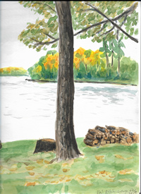
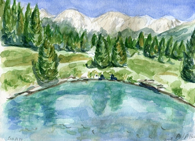
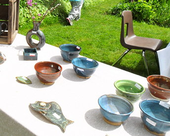
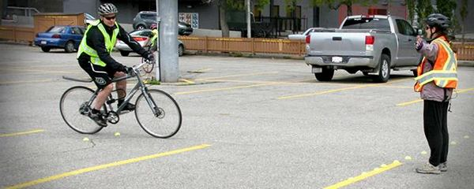
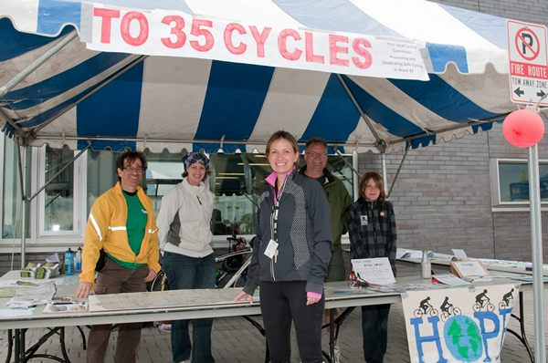

Other Interests and Activities
Artist
Fine Arts degree. Working in various media, primarily watercolour and acrylic painting, and ceramics. A sample of some of my recent work:

Can-Bike Instructor
Can-Bike is a bicycle safety course, akin to Young Drivers, to teach bike and road handling skills. Courses are run by local groups with instructors certified through Cycle Canada's Can-Bike program.
Community Events
